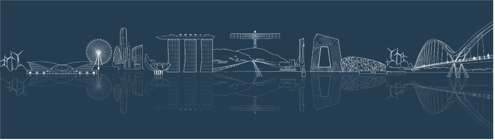

This blog offers informed opinions and perspectives relating to nascent technologies in data-centric engineering. Dr Ramaseshan Kannan (Head of Computational Science at Arup) discusses how, despite first appearances, the built environment requires rapid developments in Data-Centric Engineering.
It is no secret that the built environment faces enormous challenges globally and from a planetary perspective. On the one hand, the sector is responsible for up to 40% of all carbon emissions; on the other, there is increased demand on our built infrastructure — from rapid urbanisation and natural calamities such as earthquakes, floods, or hurricanes. In turn, there is a two-pronged challenge of decarbonisation and resilience. It is here that Data-Centric Engineering — which I see as an interdisciplinary field including computational science, data science, computational statistics, optimisation, engineering and more — will have a crucial role to play.

The built environment is often seen as a field that doesn’t need to be on the cutting edge of science. But this misperception couldn’t be farther from reality! There is a variety of complex problems that need a range of computational techniques to be solved. A number of these are unsolved problems or might be on the research frontier at low Technology Readiness Levels. As such the techniques are effectively non-existent or unavailable to the industry. On their part, research funding bodies and industry must realise these are not Instagram-style problems — rather they need ‘deep tech’ innovation and investment.
So, what kinds of AI and science does the built environment need to tackle emerging challenges? Through the lens of my work at Arup and our collaborators from academia and industry, here are a few examples.
In each case, I present a set of broad problems in the application domain, and hypothesise an (incomplete!) set of innovations we might need to leverage.
We have ageing assets whose design, condition or degradation are undetermined. Our products are prototypes that are prone to highly adverse consequences of ‘getting it wrong’.
Scientific problems: new ways to blend physics and data; new techniques to predict and prognose; alternative ways to reconstruct system behaviour from noisy, disparate data sources; techniques to simulate and understand physical behaviour — especially in safety-critical scenarios.
Innovations: new forms of uncertainty quantification; scientific machine learning; statistics; computational mechanics; novel material models; multi-modal learning.
We want to prototype designs faster to aid a better exploration of design space — especially in the early stages of a project — to reduce embodied carbon by using materials more efficiently in Pareto optimal settings.
Scientific problems: new ways to rapidly simulate and optimise for multiple disciplines, while drawing high fidelity machine learning-enabled simulations.
Innovations: new ways to reduce computational requirements through surrogates or reduced order models; probabilistic machine learning to quantify uncertainties; techniques to solve combinatorial optimisation; data-efficient learning in high dimensional spaces.
We have sparse data, and our designs arise from a creative process that owners don’t want to share. Each building, bridge, or city masterplan is unique.
Scientific problems: learning from spatial and geometric data such as 3D models; leveraging trained models across projects, and doing so while respecting intellectual property.
Innovations: new forms of transfer learning, learning on graphs, differential privacy, generative modelling.
Our assets are often systems of systems, ingesting and producing vast amounts of disparate data. We must use this information to make better decisions.
Scientific problems: ways to mix many kinds of data — sensors, images, video, meteorological, anthropic, geospatial, geotechnical, environmental — to support decision-making for growing urbanisation and infrastructure, and to become resilient to climate events.
Innovations: multi-modal learning, multi-fidelity, multi-hierarchical modelling, belief networks and much more!
The infrastructure we design and maintain has ever-changing demands. Whether it be a century-old bridge, carrying far heavier traffic compared to the original specification, or an operator looking to provision offshore wind farms. We must deal with unpredictability in how assets are utilised.
Scientific problems: better ways to predict and account for uncertainty in demand.
Innovations: better techniques for demand forecasting, uncertainty quantification, agent-based modelling, stochastic optimisation, and sequential decision problems.

I’ve only covered a tiny section of the entire set of possible areas!
We need a fundamental shift in the technology stack for dealing with data and computation at scale. As an example, a typical parametric study to solve an inverse problem (or to train a surrogate) might involve several thousands of runs of a simulation solver, and a large dataset to accompany. Traditional supercomputing and HPC facilities (whilst popular within academia) are usually uncommon in the built environment industry. The flexibility and agility afforded by public cloud services appear the most optimal solution to this problem. The advantages of high-performance computing on the cloud are hard to ignore; however, doing so needs modernisation, upskilling, and capability building. As an example, Arup works closely with AWS to solve some of the above problems at scale.
So, with a rich tapestry of applied and fundamental problems to be solved, work is needed at both an application level as well as methodological level.
Competing Interest: Dr Ramaseshan Kannan is Head of Computational Science at Arup and a Royal Academy of Engineering Industrial Research Fellow.
Keywords: Computational Science; Built Environment; Scientific Machine Learning; Sustainability
This is the blog for Data-Centric Engineering, an open-access journal published by Cambridge University Press and supported by the Lloyd’s Register Foundation. You can also find us on LinkedIn and X. Here are instructions for submitting an article to the journal.